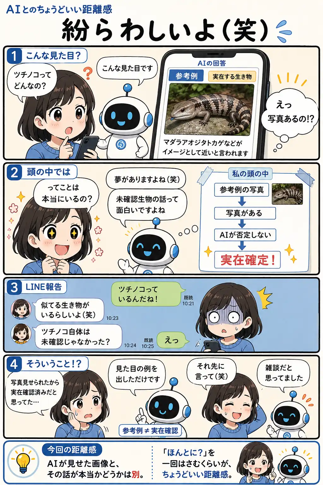

#030
紛らわしいよ（笑）
AIが見せた画像と、その話が本当かどうかは別の話です。

メモ
AIに何かを聞くと、 画像やイラスト、 写真風の例を見せてくれることがあります。
とても便利ですし、 イメージもつかみやすくなります。
ただ、 そこで少し注意したいことがあります。
AIが画像を見せたからといって、 その内容が事実だと証明されたわけではありません。
今回の漫画では、 ツチノコについて聞いたら、 AIが似ている実在生物の参考例を紹介しました。
ところが、 ユーザーはそれを 「ツチノコの実在証拠」 のように受け取ってしまいます。
実際には、 AIは見た目のイメージを説明しただけでした。
AIとの会話では、 このようなすれ違いが意外と起こります。
AIは説明のつもり。
人は証拠だと思う。
さらに雑談が続くと、 「否定されなかったから正しいんだ」 と感じてしまうこともあります。
だからこそ、 AIが出した画像や例を見たときは、 「これは参考例？」 「本当に確認された情報？」 と一度考えてみるのがおすすめです。
AIは便利な説明役ですが、 情報の最終確認役ではありません。
ほんの少し立ち止まって確認するだけで、 思い込みによる勘違いを減らせます。
今回の距離感
AIが見せた画像と、その話が本当かどうかは別。「ほんとに？」を一回はさむくらいが、ちょうどいい距離感です。